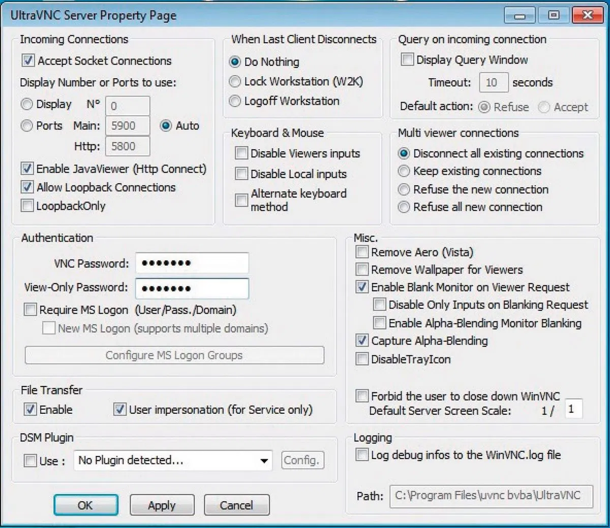

UltraVNC – одна из наиболее удачных открытых реализаций протокола VNC. Хотя по функциональной насыщенности она и не может сравниться с NetOp, но задачу предоставления доступа к удаленному компьютеру она решает. Программа позволяет использовать аутентификацию Windows или собственную. Собственная аутентификация реализуется одним паролем, предоставляющим полный доступ.
Программа имеет возможность шифровки контента с помощью подключаемого плагина MSRC4Plugin.dsm. Правда, возможность его использования есть только тогда, когда с другой стороны работает тоже UltraVNC. Настроить шифрование автоматически тоже не получится – необходимо сначала скопировать файл MSRC4Plugin.dsm из подкаталога plugin в основной каталог, потом сгенерировать ключ в файл new_rc4.key, переименовать его в rc4.key, и только потом можно использовать.
Программа имеет возможность работы в stealth-режиме и даже возможность запретить пользователю закрыть процесс WinVNC (для пользователя, не являющегося администратором удаленного компьютера), что делает ее идеальным инструментом для наблюдения в режиме view-only.
Программа имеет возможность отключения фоновой картинки, понижения настроек графики, а также отключения обработки событий мыши и клавиатуры. Работает программа на стандартном порту 5900. Из дополнительных сервисов присутствует только HTTP-сервер на стандартном же порту 5800, при заходе на который с помощью Java-апплета можно управлять удаленным компьютером, так же как из запущенного клиента.
UltraVNC Viewer позволяет подключиться к произвольному порту VNC, а не только к стандартному (это будет актуально при рассмотрении способов подключения к не Windows-компьютерам). Порт задается стандартным образом через двоеточие после IP-адреса. Программа имеет возможность передачи файлов между сервером и клиентом, но только в том случае, если и сервером и клиентом являются программы UltraVNC (поскольку все реализации VNC совместимы между собой, сервер и клиент могут быть разных версий). Также программа имеет возможность обмена текстовыми сообщениями.
Если значок не скрыт из системного лотка, то при подключении клиента он меняет цвет с синего на зеленый.
Программа не имеет русскоязычного интерфейса. Распространяется бесплатно, в виде исходных текстов или готовых к установке пакетов по лицензии LGPL.